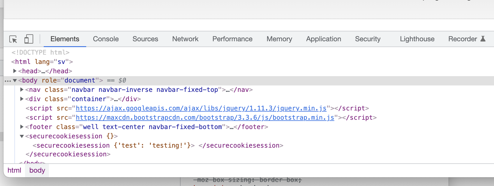

kmom03 - Flask GET, POST & session
- Repetition av Flask
- Bootstrap grid
- Flask session
- Flask GET & POST
- Json
Bootstrap
- navbar
- jumbotron, markera något viktigt
- well
- labels
- alert
- list group
- input groups
- panels
Bootstrap grid
- rader placeras i en behållare; .container (fixed-width) eller .container-fluid (full-width)
- en rad; .row används för att skapa kolumner
- innehållet placeras i kolumner; .col-sm-8
- 12 kolumner per rad
Repetition - Flask
- ramverk för att göra webbsidor i python.
- webbsidan startas med app.py
- app.py här skapas en app med routes
- felhantering 404 & 500 i app.py
- startas med app.run()
- app.cgi för att kunna köra på studentservern
Flask GET & POST
- GET, hämta data från servern, default
- POST, sända data från ett formulär till servern
- Ange metod till routen
- Importera varje paket, session, request etc.
Flask session
- Session sparas på servern
- Varje klient har en egen session
- Ett API i Flask
- Sätts med session["user"] = "marie"
- Hämtas med a_user = session.get("user")
- En nyckel behövs för din session
Session på studentservern
